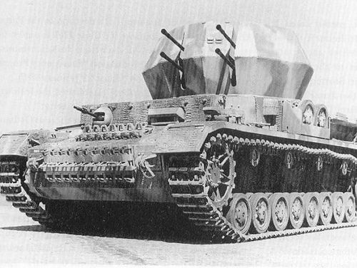

| Spesifikasi | Detail |
|---|---|
| Jenis | Flakpanzer (Tank Anti-Pesawat) |
| Basis Sasis | Panzer IV |
| Panjang | 5,92 m (kira-kira, tergantung varian Panzer IV) |
| Lebar | 2,88 m (kira-kira, tergantung varian Panzer IV) |
| Tinggi | 2,76 m |
| Berat | Sekitar 22 ton |
| Awak | 5 orang (Komandan, Penembak, 2 Pengisi Peluru, Pengemudi) |
| Lapisan Baja (Badan Depan) | 80 mm (pada sasis Panzer IV akhir) |
| Lapisan Baja (Sisi Badan) | 30 mm |
| Lapisan Baja (Belakang Badan) | 20 mm |
| Lapisan Baja (Superstruktur Atas - Open Top) | Tidak ada perlindungan signifikan dari atas |
| Persenjataan Utama | 4 x 2 cm Flakvierling 38 L/112.5 |
| Jumlah Peluru | Hingga 3200 peluru (800 per laras) |
| Mesin | Maybach HL 120 TRM |
| Tenaga Mesin | 300 PS (296 hp, 221 kW) |
| Kecepatan Maksimum | 38 km/jam (di jalan) |
| Jarak Tempuh | Sekitar 200 km (di jalan) |
| Suspensi | Pegas daun ganda dengan peredam kejut |
| Produksi | Diperkirakan antara 87 hingga 122 unit |